氣功ビデオ講座 7月号
体の中心を通す、中脈とトーラス
氣功ができていくかどうかの分かれ目は、体の中心の氣の流れ。
天地とつながる前の大切な準備を、動画でていねいに学びます。
- 形式動画講座
- 収録時間約33分
- 準備立てるスペース
前回までの講座： 3月号（立ち方） ／ 4月号（補と瀉） ／ 5月号（補と瀉 応用編） ／ 6月号（体内のルート作り）
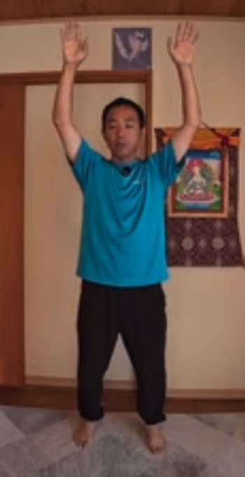
こんなこと、ありませんか？
- 氣功の動きを続けているのに、変化が分かりにくい
- 動くと、腰や膝に力が入ってしまう
- 体の中心で、氣を通す感覚を知りたい
- お辞儀やしゃがむ動きで、腰が曲がってしまう
氣功は、力で耐えるのではなく、力を抜いて行うもの。その土台になるのが、体の中心の氣の流れです。
7月号の考え方
体の中心の氣の流れ、
「中脈」を整える
氣功では、体の中心の氣の流れ（中脈）がうまく動くかどうかが、氣功ができていくかどうかの大きな分かれ目になります。ヨガでいうチャクラの流れに当たります。
中脈に氣が通ると、トーラス状の氣の流れが生じます。体の中心を通った氣が、宇宙と地球の間を循環していく。今回は、天地とつながる前の、その準備です。
これまでの補や瀉、正しい姿勢の取り方は、すべて、中脈を通すための訓練でした。それらがまとまってきて、はじめて、中脈が動き出す準備につながっていきます。
この講座で学ぶこと
6つのステップで、
体の中心の氣を整えます
-
1
床から氣のボールを持ち上げる
これまでの動きの中にあった、「床から氣のボールを挟み込むように持ち上げる」動きを、あらためて学びます。多くの方がなりやすい「前かがみ」と、目指す形を見比べられます。
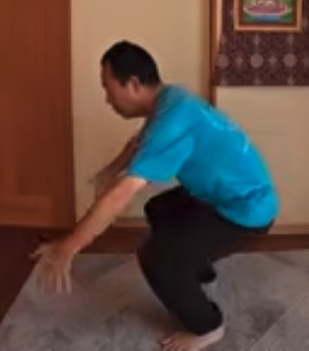
NG：前かがみ 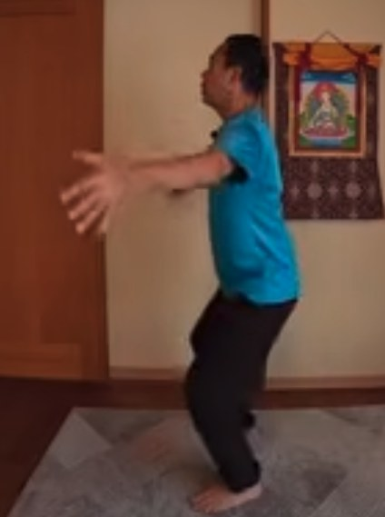
OK：体幹を垂直に -
2
尾てい骨を、エレベーターのように
足に意識を置くと踏ん張ってしまいます。尾てい骨を意識して、真下へ、真上へ。頭から背骨がぶら下がっている人体模型のイメージも、動画で確かめられます。
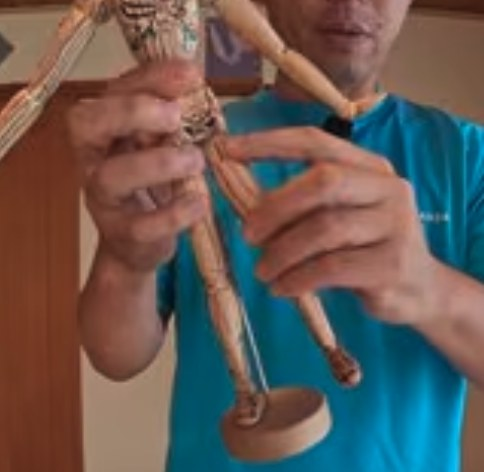
頭から背骨がぶら下がるイメージ -
3
股関節で動く：お辞儀のコツ
腰ではなく、股関節を曲げる。お辞儀は、尾てい骨を後ろに向けようとするときれいにできます。腰が曲がる形と、背中がまっすぐな形を、並べて確認できます。
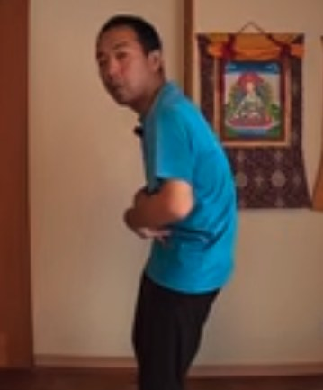
NG：腰が曲がる 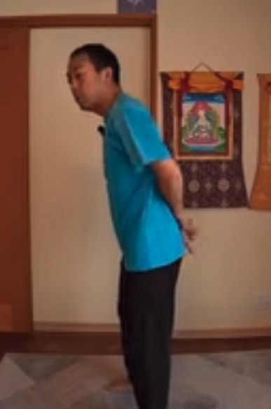
OK：背中をまっすぐに -
4
足首も使って、周りから氣を集める
膝・股関節・足首が連動して動くことで、背中の真っすぐさが保たれ、氣を動かしやすい姿勢になります。手を広げて氣を集めたとき、体全体がふっと温かくなる位置も、動画で確かめられます。
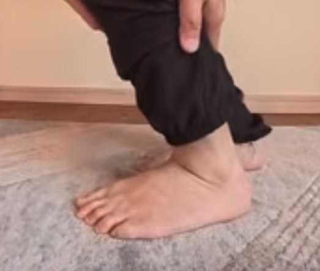
足首の動き 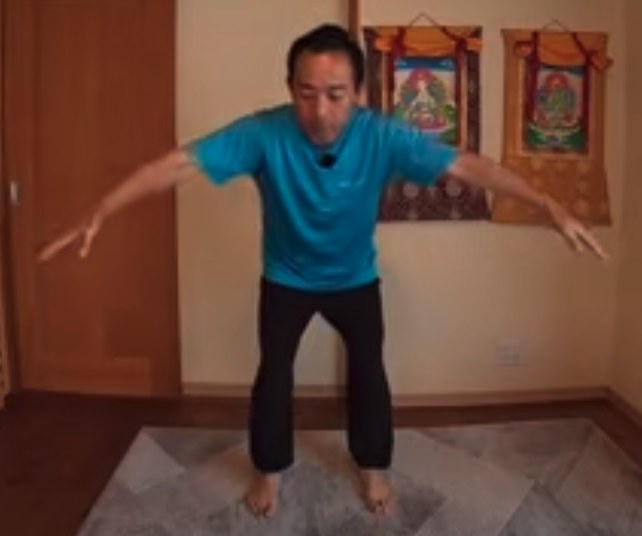
周りから氣を集める -
5
氣を圧縮して、丹田に収める
手とお腹の間が近づくと、氣の圧が高まります。その圧を圧縮して、帯脈（お腹の横）に沿って下げ、百会から丹田へ氣を導いて収めます。景色の氣を自分に入れる使い方もお話しします。
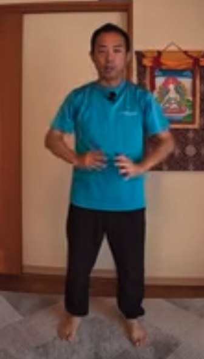
氣を圧縮して収める -
6
トーラスのワーク：バンザイ
両手をバンザイして、踵を上げてつま先立ちをする。それだけのワークです。体の緊張に気づき、自分で解いていく練習になります。邪氣を地球に返すという考え方も、あわせて学びます。
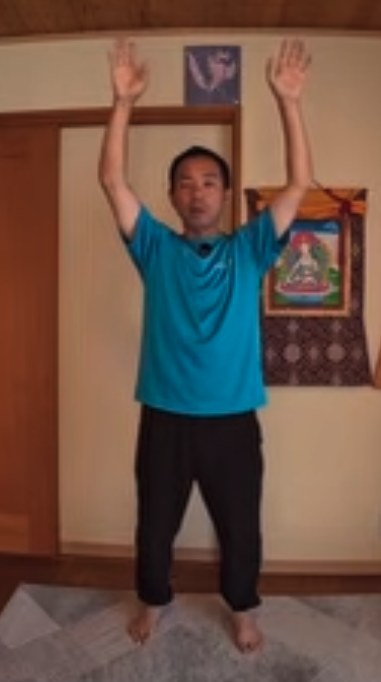
バンザイ（正面） 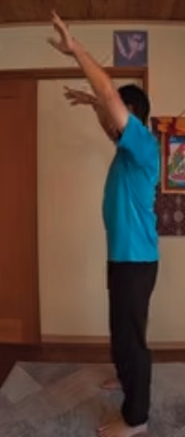
バンザイ（横から）
この講座の特長
「力を抜く」ことを、動画で確かめる
形の違いが見比べられる
前かがみと垂直、腰が曲がるお辞儀と股関節で曲がるお辞儀。NG例と正しい例を並べて確かめられます。
意識の置き場所が変わる
足ではなく尾てい骨に意識を置く。意識する場所によって、体の動きが変わることを体感できます。
日常に持ち帰れる
旅先の景色から氣を入れる使い方や、バンザイのワークなど、日々の練習に取り入れやすい内容です。
言葉で言うより、やるのが難しい。
だから、動画で何度も確かめる。
講師
神田 一郎（かんだ いちろう）
富士山のふもとで、氣功を教えています。リハビリの現場での経験と、ご自身の体と向き合ってきた歩みを土台に、「なんでもOK、オールOK」の気持ちで、無理なく続けられる氣功をお伝えしています。
この講座でも、うまくできているかどうかを気にするより、まずは自分の体の小さな変化に気づくことを大切にしています。
講座の概要
- 講座名
- 氣功ビデオ講座 7月号「中脈とトーラス」
- 形式
- 動画講座（講師が実演しながら解説）
- 収録時間
- 約33分
- 内容
- 床から氣のボールを持ち上げる動き／尾てい骨の使い方／股関節と足首／周りから氣を集める／丹田への収め方／トーラスのワーク／邪氣を地球に返す考え方
- 準備するもの
- 動画を見ながら立てる広さ
- 価格
- 8,800円（税込）
- 視聴方法
- Vimeo（お支払い完了後、いつでもご視聴いただけます）
- お支払い
- PayPal
氣功ビデオ講座シリーズ
段階を踏んで、少しずつ深めていく
月ごとに、内容がつながっていくシリーズです。6月号は、天とつながるための体の中のルートを作ります。
よくあるご質問
3月号〜6月号を見ていなくても受講できますか？
受講できます。ただ、7月号は、立ち方（3月号）や、補と瀉（4月号・5月号）、体内のルート作り（6月号）の上に、体の中心の氣の流れを重ねていく内容です。質を高めたい方は、3月号、4月号、5月号、6月号から順にご覧いただくのがおすすめです。
氣功が初めてでも大丈夫ですか？
はい。ただ、シリーズの途中の内容にあたるため、初めての方は3月号から始めるのがおすすめです。
準備するものはありますか？
動画を見ながら立てるスペースがあれば大丈夫です。
購入後は、どうやって視聴しますか？
お支払い完了後、いつでもVimeoでご視聴いただけます。
どんな効果がありますか？
体の感じ方には個人差があります。この講座は、体の使い方を学ぶ内容であり、医療行為や、病気の診断・治療を目的としたものではありません。体調に不安がある方は、無理をせず、医師にご相談ください。